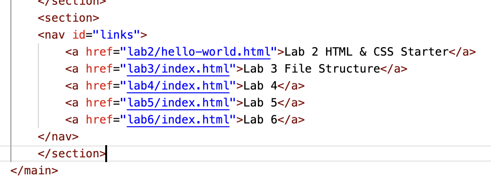
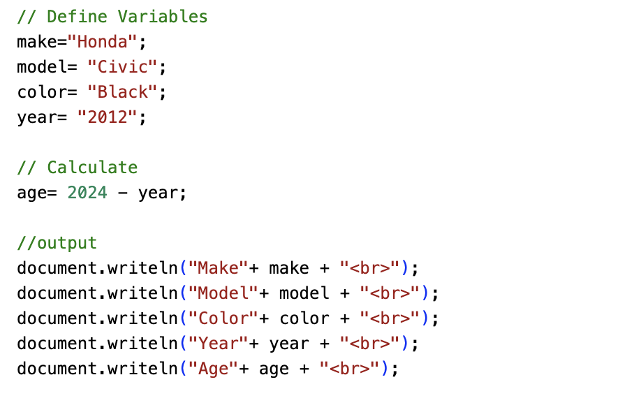

Lab 5 - Data Types and Variables
Challenge
This challenge was to work with a partner, and experiment with javascript. We have been learning how to do this in class, but actually putting it to the test in our own lab was slightly diffucult, especially because formatting was so important. My partner and I were checking back in with eachother to see what we were writing about very often. We were able to bounce ideas off of one another, and give eachother advice. We also read eachothers code, as a peer review.
Problems
This lab was a challenge for me because it was hard to understand how java script can look in the browser, and not just in the VisStudioCode. I only struggled with formatting, and I was able to get help by talking to my partner Emma, who was able to show me what she had done and give me advice.
Reflection
Reflecting on this assignment I my partner and I did very well. I think I understand a little bit more into how java script can influence how your browser works, and I think it was a good stepping stone to understanding javascript better, to prepare ourselves for the upcoming assignments.
Results
This is my javascript variables from my browser .
This is the javascript from VisualStudioCode.
This is my car! (without the dents I put in it).